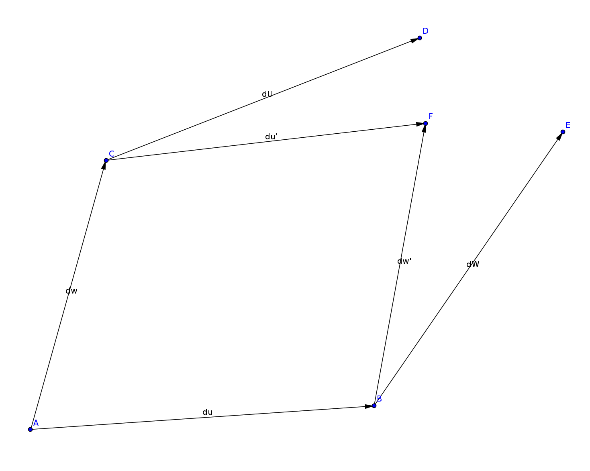
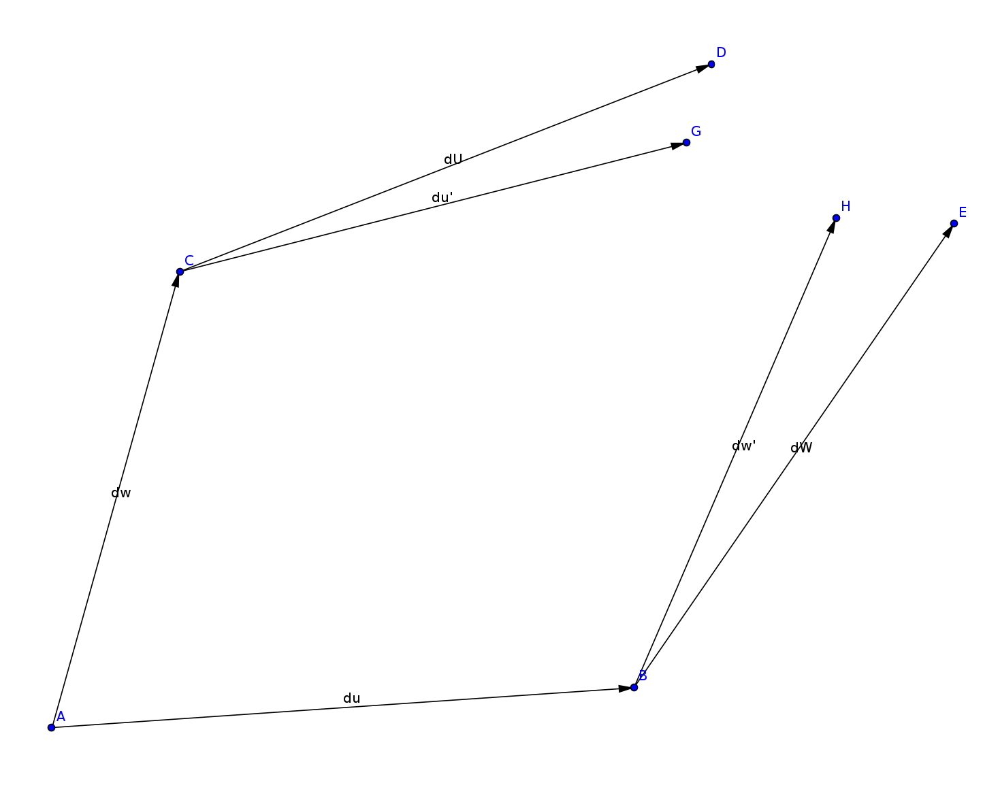

Riemann Tensor

- In flat space, each point can be identified with a position vector
- The position of a point given a position vector from another point is then just their sum
- In curved space, we cannot identify points in space with position vectors
- However, each point in space can be treated as flat locally, so that only neighboring points (defined as those only some infinitesimal distance away) can be indicated with a position vector originating from center point of the neighborhood
- The vector \(\delta \vec{u}\) points from point \(A\) to neighboring point \(B\)
- The vector \(\delta \vec{w}\) points from point \(A\) to neighboring point \(C\)
- Vector \(\delta \vec{u}\) at point \(C\), locates the neighboring point \(D\)
- Vector \(\delta \vec{w}\) at point \(B\), locates the neighboring point \(E\)
- \(E\) close to \(B\), \(D\) close to \(C\), \(B\) and \(C\) close to \(A\)
- \(E\) and \(D\) NOT close to \(A\), cannot uniquely identify with a position vector from \(A\) to \(E\) and \(D\)

- \(\delta\vec{w}\) and \(\delta\vec{u}\) are treated as close enough to be locally flat and indicate positions around \(A\)
- Their sum \(\delta\vec{w}+\delta\vec{u}\) is long enough to need corrections, and does not uniquely identify a point in space
- In general for curved space, the points \(D\) and \(E\) do not coincide
- Instead of adding vectors like we would in flat space, we may parallel transport \(\delta\vec{w}\) along \(\delta\vec{u}\) resulting in the vector \(\delta \vec{w}^{\prime}\) at point \(B\) and vice versa for \(\delta\vec{u}^{\prime}\) at point \(C\).
- This compensates for the curvature of space and identifies a unique point in space \(F\) independent of order IF space is torsionless

- If there is torsion, even \(\delta\vec{u}^{\prime}\) and \(\delta\vec{w}^{\prime}\) do not coincide to the same point

- For infinitesimal vectors, we only require the lowest order correction of parallel transport, the gradient of the vector
$$\delta\vec{u}^{\prime}=\delta\vec{u}+\nabla_{{\delta\vec{w}}}\delta\vec{u}$$
$$\delta\vec{w}^{\prime}=\delta\vec{w}+\nabla_{{\delta\vec{u}}}\delta\vec{w}$$

- These two paths correspond to the same point \(F\), they do NOT correspond to the same tangent space AT \(F\).
- We can transport another vector \(\vec{v}\) on the path \(ABF\), and the path \(ACF\) and compare the difference at point \(F\)

$$\vec{v}{AC}=\vec{v}+\nabla{\delta \vec{w}}\vec{v}$$
$$\vec{v}{AC}=\vec{v}+\nabla$$}}\vec{v
$$ \vec{v}{ACF}=\vec{v}\ $$}+\nabla_{\delta \vec{u}^{\prime}}\vec{v}_{AC
$$ \vec{v}{AB}=\vec{v}+\nabla\ $$}}\vec{v
$$ \vec{v}{ABF}=\vec{v}\ $$}+\nabla_{\delta \vec{w}^{\prime}}\vec{v}_{AB
$$ \implies\delta\vec{v}=\vec{v}{ABF}-\vec{v}\ $$
$$ =\left(1+\nabla_{\delta\vec{w}^{\prime}}\right){\vec{v}}{AB} -\left(1+\nabla\ $$}^{\prime}}\right){\vec{v}}_{AC
$$ =\left(1+\nabla_{\delta\vec{w}^{\prime}}\right)\left(1+\nabla_{\delta\vec{u}}\right)\vec{v} -\left(1+\nabla_{\delta\vec{u}^{\prime}}\right)\left(1+\nabla_{\delta\vec{w}}\right)\vec{v}\ $$
$$ \implies\delta\vec{v}=\left[ \left(1+\nabla_{\delta\vec{w}^{\prime}}\right)\left(1+\nabla_{\delta\vec{u}}\right) -\left(1+\nabla_{\delta\vec{u}^{\prime}}\right)\left(1+\nabla_{\delta\vec{w}}\right) \right]\vec{v}\ $$
The Riemann tensor is defined as:
$$ \delta \vec{v}=R(\delta \vec{w}, \delta \vec{u})\vec{v} $$
Riemann tensor largest terms are second order in size of the infinitesimal transport vectors. $$ \implies R(\delta \vec{w}, \delta \vec{u})=\left(1+\nabla_{\delta\vec{w}^{\prime}}\right)\left(1+\nabla_{\delta\vec{u}}\right) -\left(1+\nabla_{\delta\vec{u}^{\prime}}\right)\left(1+\nabla_{\delta\vec{w}}\right)\ $$
$$ =\left(1+\nabla_{\delta\vec{w}+\nabla_{\delta\vec{u}}\delta\vec{w}}\right)\left(1+\nabla_{\delta\vec{u}}\right) -\left(1+\nabla_{\delta\vec{u}+\nabla_{\delta\vec{w}}\delta\vec{u}}\right)\left(1+\nabla_{\delta\vec{w}}\right)\ $$
$$ \nabla_{\vec{a}+\vec{b}}=\nabla_{\vec{a}}+\nabla_{\vec{b}} \ $$
$$ \implies R(\delta\vec{w}, \delta\vec{u})= \left(1+\nabla_{\delta\vec{w}}+\nabla_{\nabla_{\delta\vec{u}}\delta\vec{w}}\right)\left(1+\nabla_{\delta\vec{u}}\right)\ -\left(1+\nabla_{\delta\vec{u}}+\nabla_{\nabla_{\delta\vec{w}}\delta\vec{u}}\right)\left(1+\nabla_{\delta\vec{w}}\right)\ $$
$$ =\nabla_{\delta\vec{w}}\nabla_{\delta\vec{u}}-\nabla_{\delta\vec{u}}\nabla_{\delta\vec{w}} +\nabla_{\nabla_{\delta \vec{u}}\delta\vec{w}}-\nabla_{\nabla_{\delta\vec{w}}\delta\vec{u}} + O(\delta^3)\ $$
$$ =\nabla_{\delta\vec{w}}\nabla_{\delta\vec{u}}-\nabla_{\delta\vec{u}}\nabla_{\delta\vec{w}} +\nabla_{\nabla_{\delta \vec{u}}\delta\vec{w}}-\nabla_{\nabla_{\delta\vec{w}}\delta\vec{u}} $$
$$ =\nabla_{\delta\vec{w}}\nabla_{\delta\vec{u}}-\nabla_{\delta\vec{u}}\nabla_{\delta\vec{w}} -\nabla_{\left(\nabla_{\delta\vec{w}}\delta\vec{u}-\nabla_{\delta\vec{u}}\delta\vec{w}\right)} $$
$$ \implies R(\delta\vec{w}, \delta{u})=\nabla_{\delta\vec{w}}\nabla_{\delta\vec{u}}-\nabla_{\delta\vec{u}}\nabla_{\delta\vec{w}} -\nabla_{\left(\nabla_{\delta\vec{w}}\delta\vec{u}-\nabla_{\delta\vec{u}}\delta\vec{w}\right)} $$
Definition of Lie bracket of two vectors also results in a vector (I don't like using a commutator here, you aren't multiplying the vectors, this isn't a two form \([\vec{a}, \vec{b}]=2 \vec{a} \wedge \vec{b}\)):
$$ \vec{\mathcal{L}}(\vec{a}, \vec{b})=\nabla_{\vec{a}}\vec{b}-\nabla_{\vec{b}}\vec{a} $$
$$ \implies \boxed{R(\delta\vec{w}, \delta\vec{u}) =\left[\nabla_{\delta\vec{w}}, \nabla_{\delta\vec{u}}\right] -\nabla_{\vec{\mathcal{L}}(\delta \vec{w}, \delta \vec{u})}} $$
$$ R(\delta\vec{w}, \delta\vec{u}) =\left[\nabla_{\delta\vec{w}}, \nabla_{\delta\vec{u}}\right] -\nabla_{\vec{\mathcal{L}}(\delta \vec{w}, \delta \vec{u})} $$
$$ \delta \vec{v} = R(\delta \vec{w}, \delta \vec{u}) \vec{v} $$